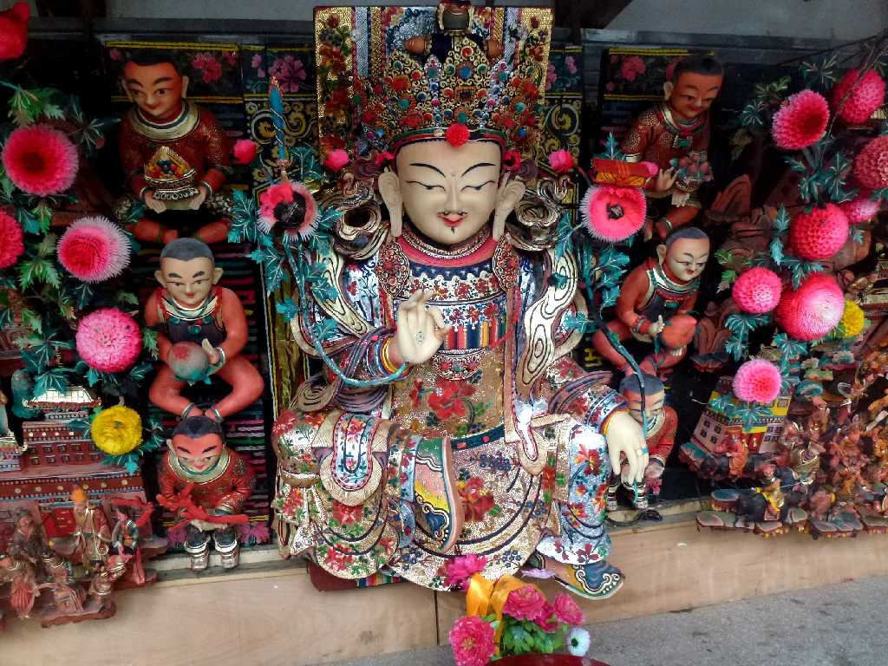
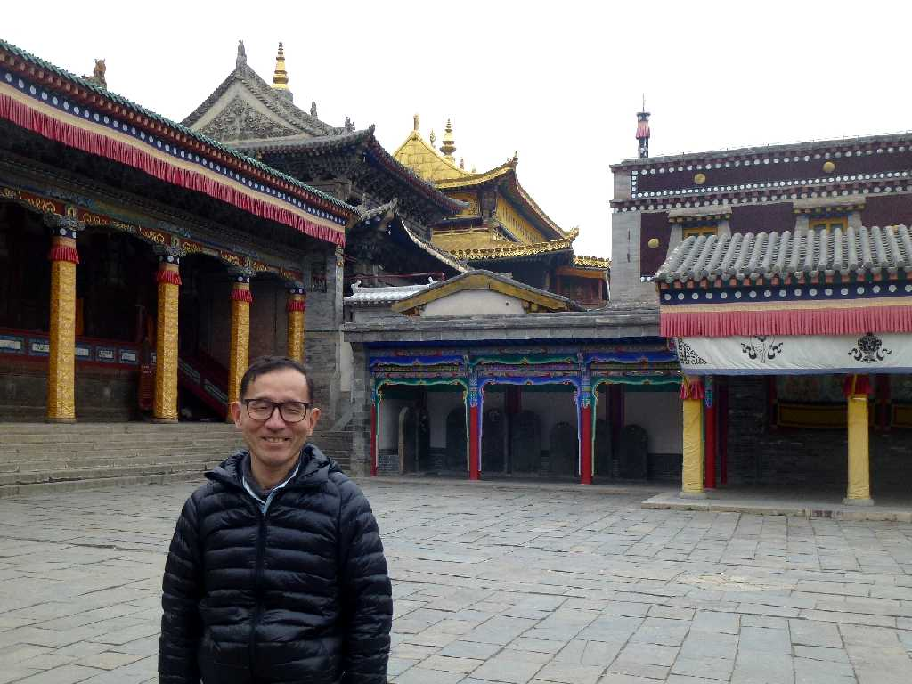
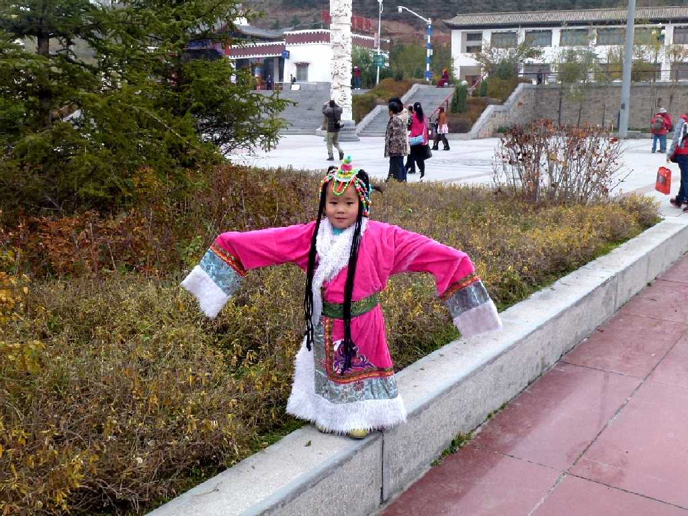

Ta'er Monastery Xining Qinghai China 青海 西宁 塔尔寺
チベット仏教ゲルク派の開祖ツォンカパ生誕の地タール寺は１５６０年創建のゲルク派最大の寺院

The Butter Sculpture Ta'er Monastery 塔尔寺 酥油花
タール寺のバターで作られたバター彫刻

October 17 2014 Ta'er Monastery
タール寺本殿の金瓦殿

Chinese Ta'er Monastery
西寧からネパールのカトマンズまでのチベット縦断３,０００ｋｍの旅が始まる